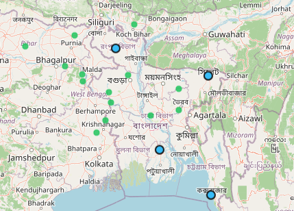
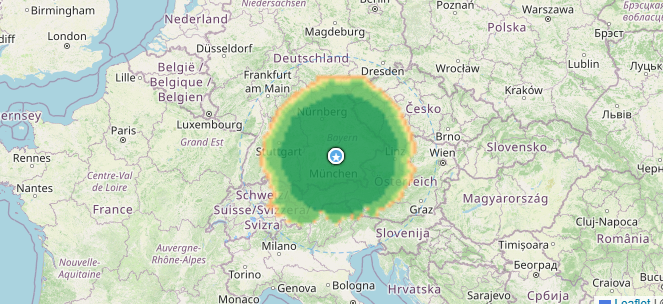
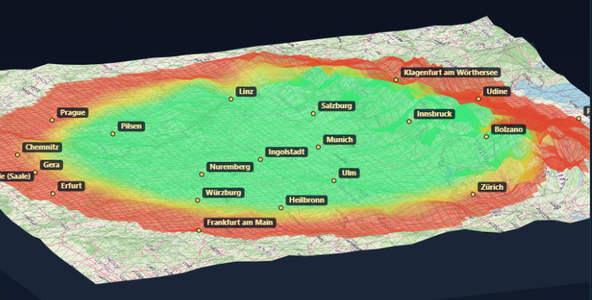
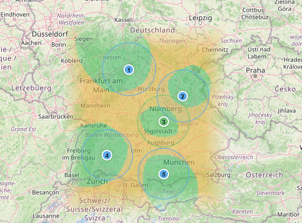

Funkabdeckung planen. Interferenz sehen. Alles belegen.
RFBench ist eine offline-fähige, auditierbare Suite für die Flugsicherungs-Frequenzplanung: Abdeckungskarten mit echtem Gelände, 3D-Cockpit-Flug durch das Versorgungsgebiet, Interferenz- und Co-Site-Analyse — mit reproduzierbarem Rechenweg nach ITU- und ICAO-Referenzen.
3D-Cockpit-Flug & Climax-Abdeckung
Erste-Person-Flug durch das nach Empfangsreserve eingefärbte Gelände (grün = versorgt → rot = unter Schwelle), Standort und Ortsnamen markiert — sowie die 3D-Darstellung der Offset-Carrier/Climax-Versorgung.
Video wird ergänzt
3D-Cockpit-Flug
Perspektivischer Flug entlang frei wählbarer Route; HUD zeigt Pegel/Reserve.
Video wird ergänzt
3D-Climax / Offset-Carrier
Mehrsender-Versorgung mit Offset-Trägern, räumlich dargestellt.
Werkzeuge im Einsatz
Reale Ansichten aus RFBench — Live-Verkehr gegen die Abdeckung, geländebasierte Heatmaps und 3D-Darstellung.

Bild folgt

Bild folgt

Bild folgt

Bild folgt
Von der Koordinate bis zum Behörden-Nachweis
Abdeckung mit Gelände
Flächenraster über SRTM-Gelände (P.526/ITM) mit echten Funkschatten und Empfangsreserve.
3D-Cockpit-Flug
Erste-Person-Flug durchs Versorgungsgebiet, Standort- und Ortsnamen-Marker, HUD-Pegel.
Co-Site & Interferenz
Kollokation, Entkopplung, IM-Produkte, Blocking, Gleichkanal/Climax-Offsets.
Ausbreitungsmodelle
ITU-R P.525/526/528/1546/2001, ITM/Longley-Rice — mit Gültigkeitsbereichen.
Nachweis-Kette
Reproduzierbarer Rechenweg, Unsicherheitsbudget, PDF-Dossier, Zwei-Personen-Prinzip.
Interoperabel
SEAMCAT-Import (.sws/.swr), GeoJSON/CSV/JSON-Export, ADS-B-Realverkehr, Melde-Register.
Belegbar, nicht behauptet
Kernmodelle gegen offizielle ITU-/NTIA-/OFCOM-Referenzen geprüft, Build byte-reproduzierbar, kontinuierliche Selbsttests. RFBench ist ein Entscheidungs- und Nachweiswerkzeug — keine zertifizierte Sicherheitsfunktion.